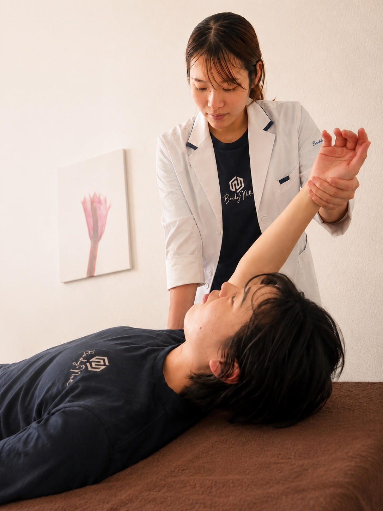
完全予約制｜阪急烏丸駅 徒歩4分病院で治らなかった肩の痛みに
四十肩・五十肩でお悩みの女性へ。
女性の理学療法士が、完全予約制でやさしく診ます
※当院は医療機関ではありません（保険診療ではなく、自費の整体施術です）
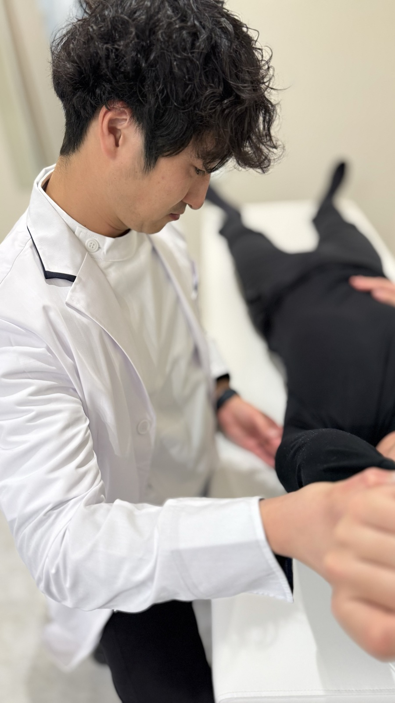
Googleクチコミより
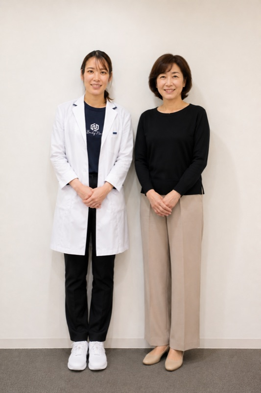
五十肩で肩が上がらず伺いました。寝返りしても痛くて困っていましたが、今では問題ないです。担当はたまに変わりますが皆さん的確に治療してくださり良かったです。肩も左右差なく動くようになったのでかなり助かりました。また困ったらお願いしようと思います。肩で困ってる人は一度お願いしてもいいかと思います。
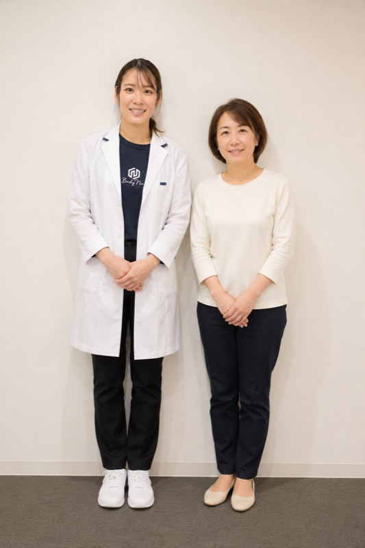
肩の痛みと腕の痺れが取れず困っていたので伺いました。初回でもほぼほぼ症状はなくなりましたが、再発するのが嫌で通わせていただいています。今はほんとに楽になりました。細かくみていただけるので頼りになります。整体探しで迷っている方には一度オススメできるかと思います。
※ 個人の感想であり、効果・感じ方には個人差があります。
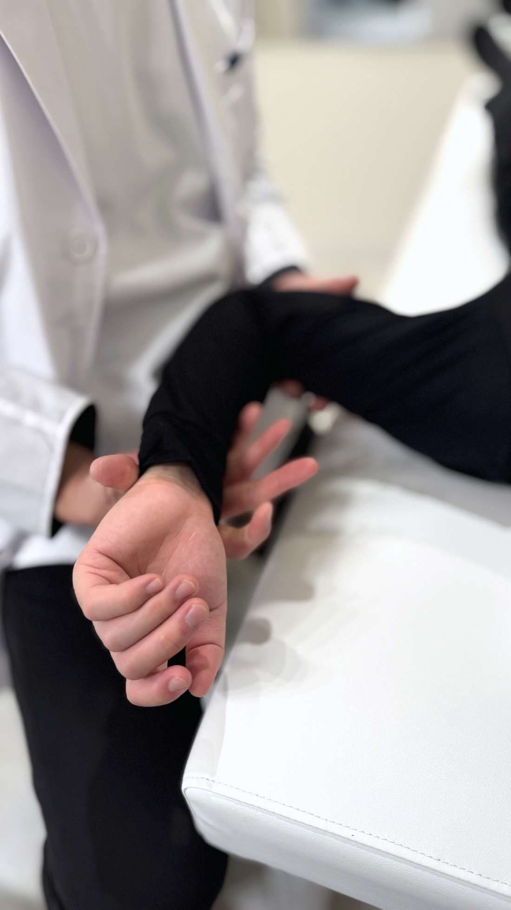
国家資格・理学療法士が、可動域測定と動作分析で「原因」と「いまの病期」を見立ててから施術。いきなり揉みません。
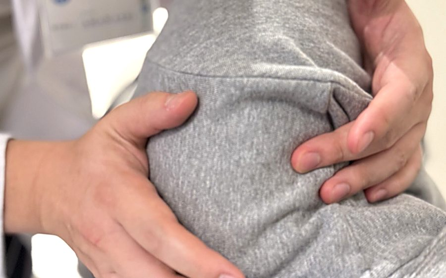
REASON 02約50分、肩のための時間。関節包・肩甲骨まわり・かばい方のクセまで、原因に合わせた徒手アプローチを行います。
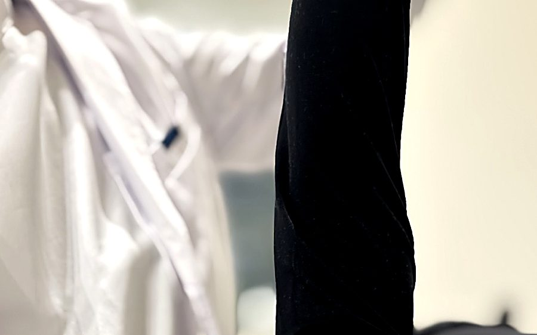
REASON 03ご自宅で1〜2分でできるセルフケアを毎回お伝えします。目指すのは、当院を卒業して自分の肩と付き合えるようになることです。
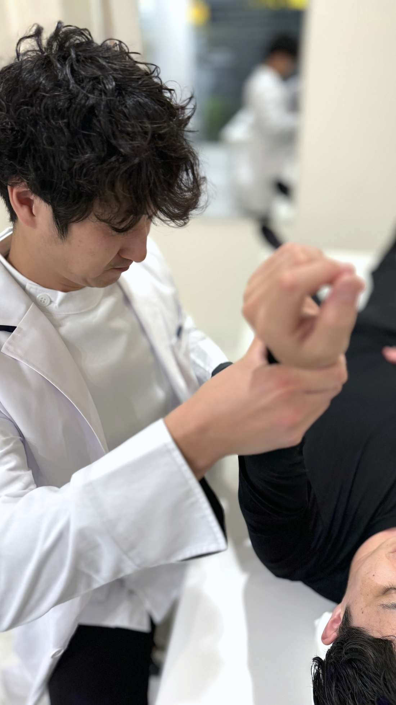
まずは、あなたの肩の
「いま」を知るところから。
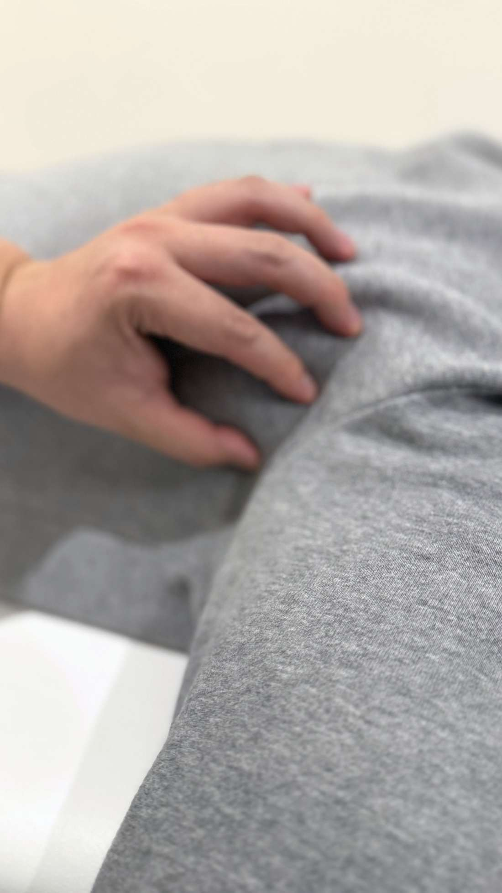
その痛み、
「原因」を知れば、
対処が変わります。
ここから5分、五十肩の正しい知識をお伝えします。
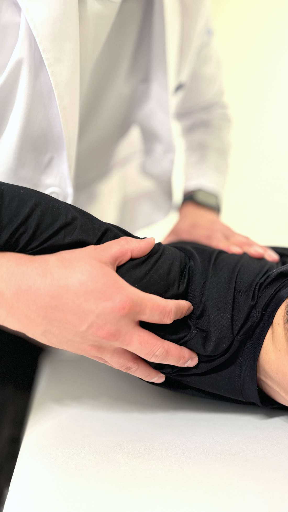
五十肩の正式名称は「肩関節周囲炎（かたかんせつしゅういえん）」。肩の関節を包む袋（関節包）やその周囲の組織に炎症が起き、やがて袋そのものが硬く縮んで（拘縮・こうしゅく）、腕が上がらなくなる状態です。
日本整形外科学会によると、中年以降・特に50歳代に多く、人口の約2〜5%にみられるとされています。「歳のせい」ではなく、名前も仕組みもはっきりした肩の状態です。40代で起これば「四十肩」と呼ばれますが、呼び方が違うだけで同じものです。
※ 仕組みを分かりやすくした模式図です（実際の解剖を正確に表すものではありません）
出典：日本整形外科学会「五十肩（肩関節周囲炎）」／有病率は整形外科領域の報告（Dyer et al. 2023 ほか）より
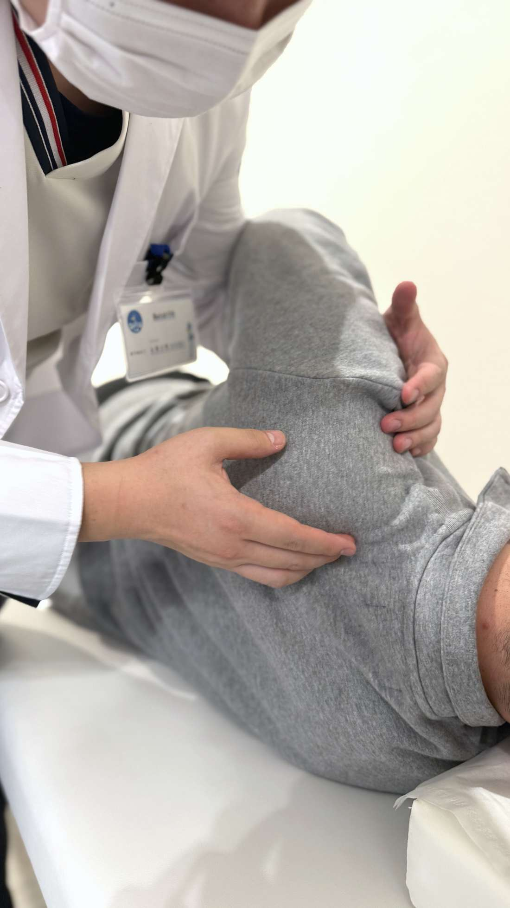
五十肩は 炎症期 → 拘縮期 → 回復期 という経過をたどることが知られています。大切なのは、時期によって「やるべきこと」と「やってはいけないこと」がほぼ正反対になること。なお、この3つの時期は医療現場では「病期（びょうき）」と呼ばれます。
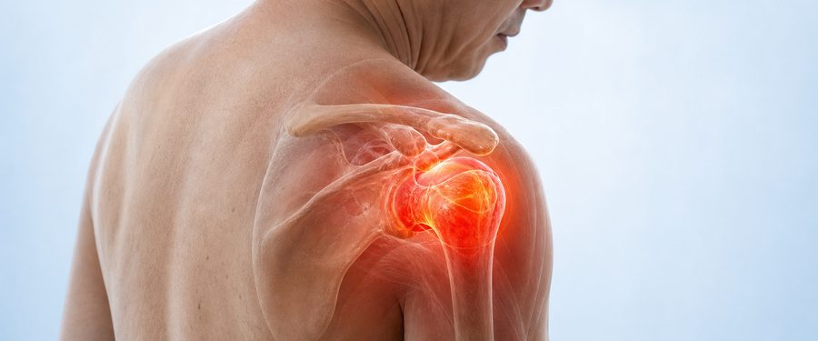
ズキズキした強い痛み。夜間痛が最も強い時期で、眠れないほど痛むことも。痛みで腕を動かせる範囲が急に狭くなっていきます。
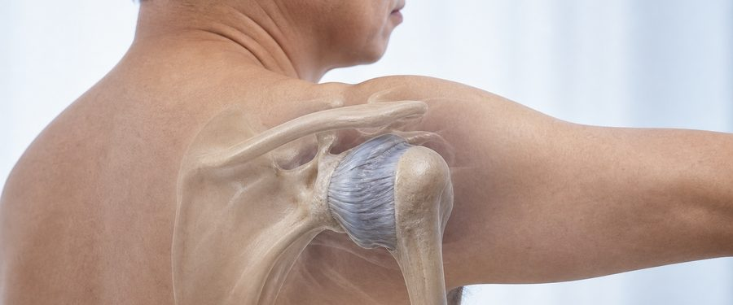
強い痛みは落ち着く一方、関節包が硬く縮み、「痛みより動かない」が主役に。髪を結ぶ・帯を結ぶ動作が難しくなります。
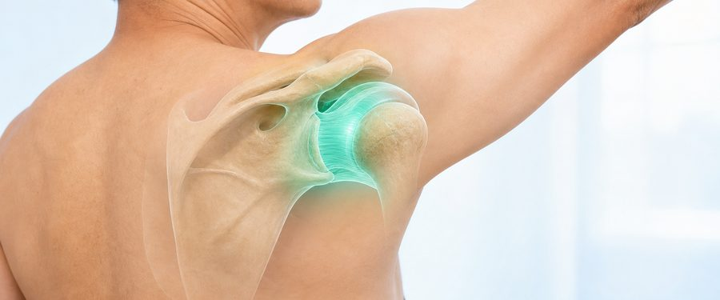
痛みが落ち着き、少しずつ動きが戻っていく時期。ただし自然経過では突っ張り感や動かしにくさが残る場合もあります。
── いまのあなたの肩は、どの時期ですか？ ──
自分で見極めるのは難しい、と言われています。だからこそ「評価」が大切です（LESSON 05へ）。
出典：国立病院機構 霞ヶ浦医療センター／Reeves(1975), Hannafin & Chiaia(2000)。期間は報告に基づく目安で、個人差があります。
たしかに、五十肩が自然に良くなる方もいます。しかし研究報告では、楽観できない数字も示されています。
※ 経過の考え方を表した模式図です。効果や経過には個人差があります。
出典：約40%・約15%＝Binder et al.(1984)／病期ごとの期間・1〜3年＝Reeves(1975), Hannafin & Chiaia(2000)／国立病院機構 霞ヶ浦医療センター。反対側の発症は整形外科領域の報告より。
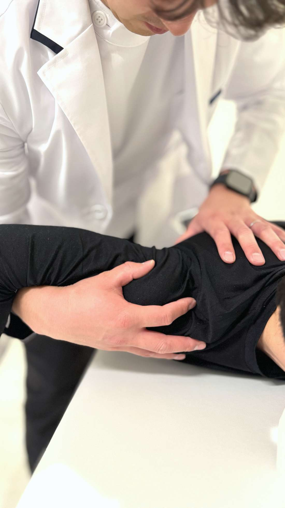
マッサージで一時的に楽になるのに、すぐ戻ってしまう──。それは施術が悪いのではなく、「気持ちいい場所」と「原因の場所」が違うことが多いからです。
五十肩の動かしにくさは、関節包の拘縮・肩甲骨の動きの乱れ・痛みをかばう動作のクセなど、複数の要因が絡みます。原因を特定しないままのアプローチでは、同じところに戻ってしまうのです。
| その場しのぎの もみほぐし | 原因を評価してからの アプローチ | |
|---|---|---|
| 施術前の検査 | ×なし・問診のみ | ○可動域測定・動作チェック |
| アプローチ先 | ×痛い場所・凝った場所 | ○痛みを生む原因の組織 |
| 病期との対応 | ×時期に関係なく同じ施術 | ○炎症期・拘縮期で内容を変える |
| 再発予防 | ×その日の心地よさまで | ○セルフケア指導で維持 |
※ 特定の店舗・施術を批判するものではなく、「方法」の違いの説明です。リラクゼーションには休息・リフレッシュという別の価値があります。
自分の肩の「いま」を知ることが、
回復への最初の一歩です。
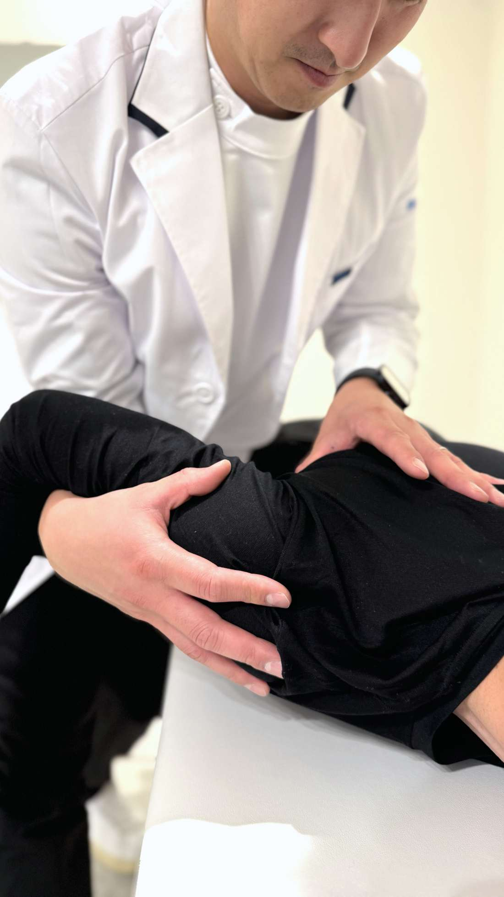
当院の施術者は国家資格を持つ理学療法士。整形外科の現場で多くの肩と向き合ってきた経験をもとに、「いきなり揉まない」「まず評価から」を徹底しています。
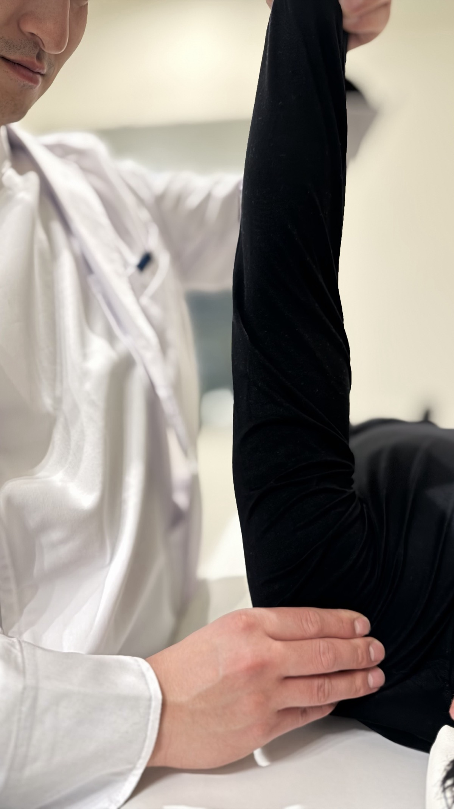
腕が何度まで上がるかを確認医療現場でも用いられる標準的な測定法に基づき、肩の動きを角度で確認。変化を数字で追えるので、回復の度合いが客観的に分かります。
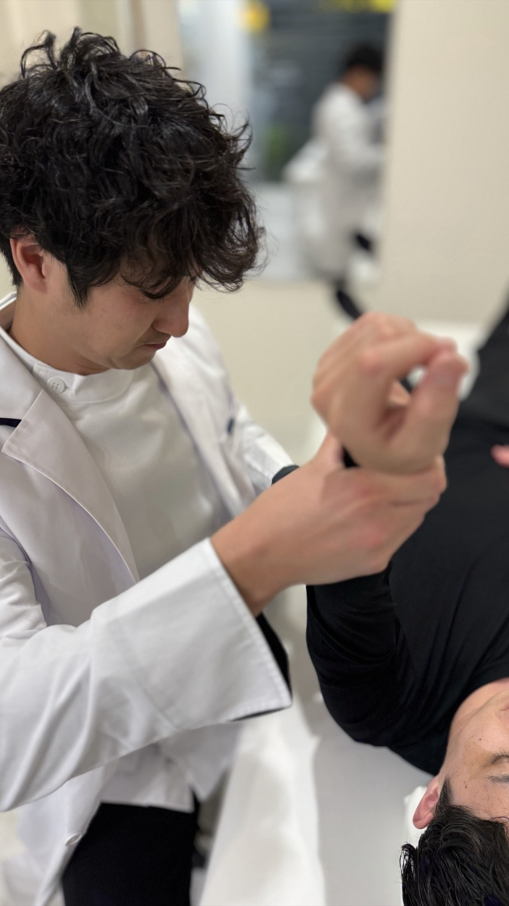
肩甲骨の動き方を観察腕を上げる動きは、肩関節と肩甲骨の連動（おおよそ2:1のリズム）で成り立ちます。どこの動きが足りないのか、かばい方のクセまで観察します。
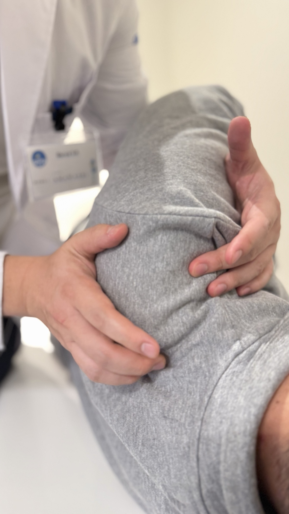
硬さ・痛みの出どころを触れて確認触診と検査の結果から「いまどの病期か」「どの組織が動きを妨げているか」を見立て、その日の施術内容と今後の計画をご説明します。
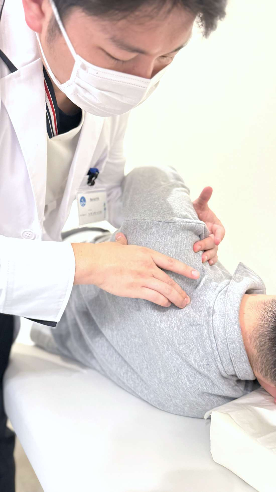
当てはまるものにチェックを入れてみてください。
※医学的な診断ではありません。目安としてご利用ください。
※ このチェックは医学的な診断ではありません。目安としてご利用ください。
チェックが付いた方は、
固まりきる前の早めの評価を。
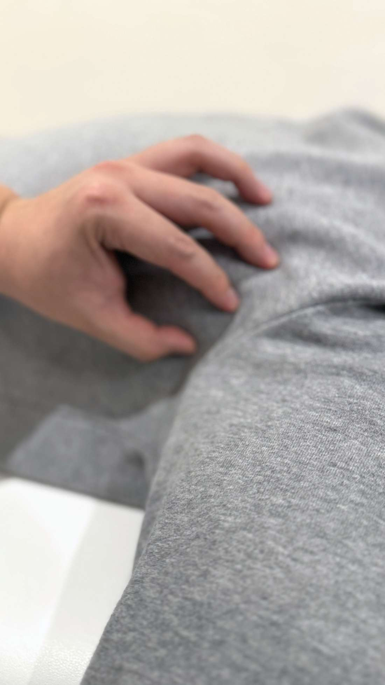
あなたの肩も、
まず「いま」を知るところから。
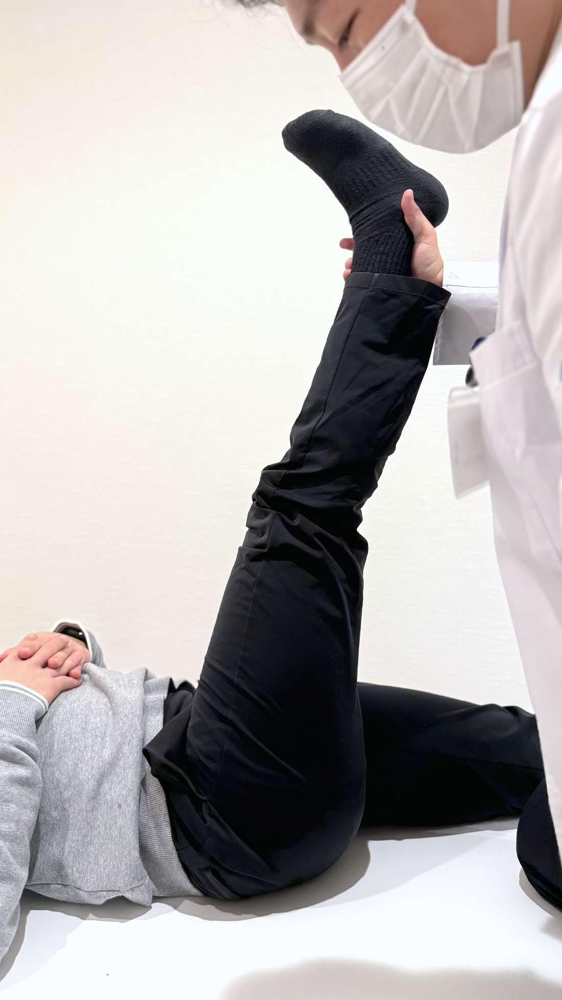
いつから・どんな動きで痛むか、夜の状態、これまでの経過を丁寧に伺います。
可動域測定・動作分析・触診で、痛みの原因といまの病期を見立てます。
評価結果に基づき、原因組織と肩甲骨まわりへ。ボキボキ鳴らす施術は行いません。
今後の計画と、自宅で1〜2分でできる再発予防エクササイズをお伝えします。
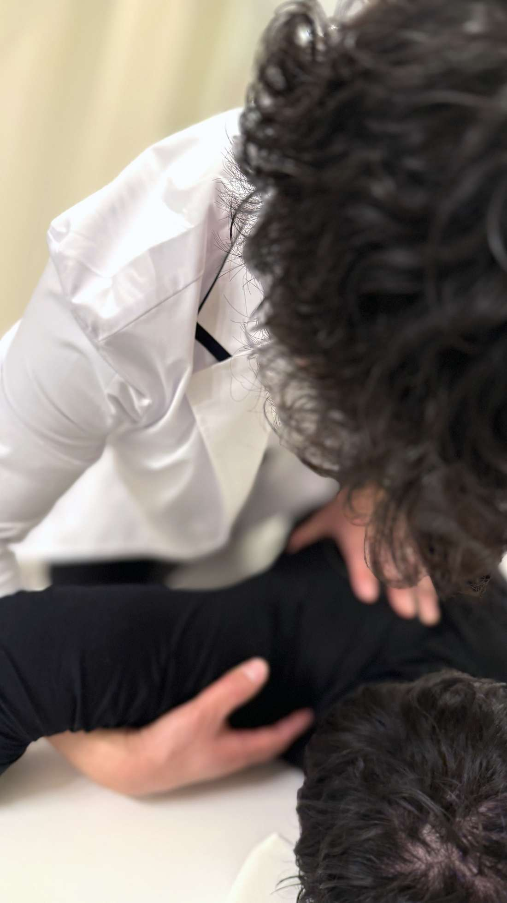
拘縮が固まりきる前の、早めの評価をおすすめします。
初回は施術に加えて、評価と見通しのご説明に時間をかけるため、体験価格でご案内しています。
※LINEで「LPを見た・整体 体験コース（¥3,300）希望」とお送りください。折り返し、ご希望の日時をご案内します。
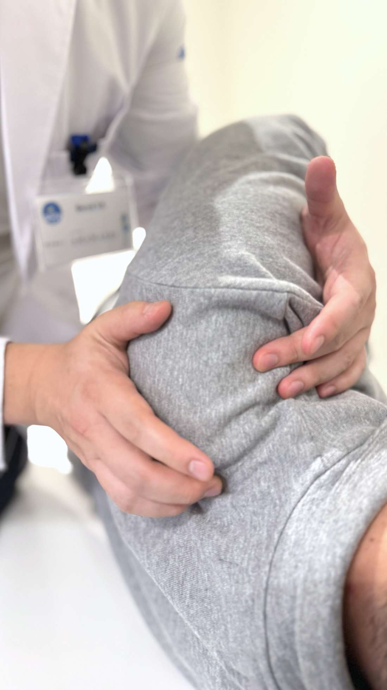
不安なことは、
LINEで聞くだけでも大丈夫です。
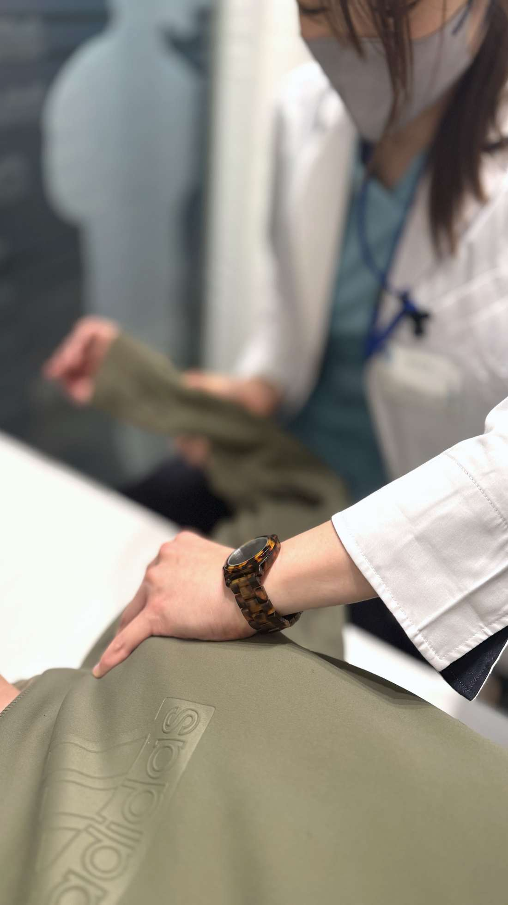
| 院名 | Body Nate 四条烏丸店（四十肩・五十肩 専門整体） |
|---|---|
| 担当 | 理学療法士 Chisa（国家資格） |
| 所在地 | 〒600-8492 京都市下京区四条通新町東入月鉾町39-1 四条烏丸大西ビル702号 |
| アクセス | 阪急烏丸駅 徒歩4分 |
| 営業時間 | 平日 9:00〜21:00／土日 9:00〜19:00（完全予約制） |
| 定休日 | 不定休 |
| ご予約 | LINEにて24時間受付 |
Googleマップで開く｜場所が分かりにくい場合はLINEでお気軽にご連絡ください。